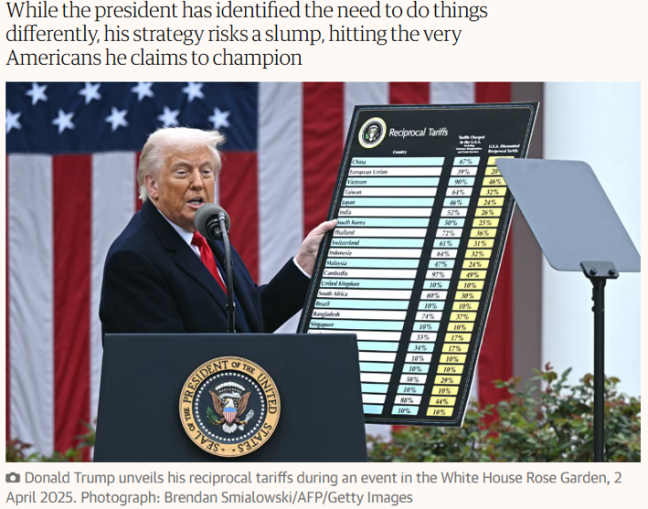
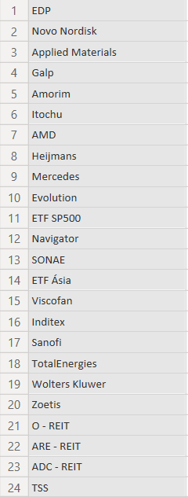

My Investment Journey
I have always been careful about saving money, but I've also always been risk-averse.
Occasionally, I invested small amounts in low-risk investment funds, but the returns were almost nonexistent. As a result, I never had much interest in investing in stocks. In fact, I knew virtually nothing about it, other than that it involved management and commission fees.
On a flight, I happened to listen to a podcast hosted by two medical doctors who were candidly sharing their early journey into the world of stock market investing. I really liked their approach, and it sparked my curiosity. Right away, I installed a brokerage app just to see how it worked. From time to time, I would check the app, only to realize that I had missed opportunities to invest in a few stocks that had caught my eye. I spent all of 2024 without making a single investment—just tracking the market—and decided that 2025 would be the year I made my first move.
And so I did. I was still a bit hesitant, as there was talk that the S&P 500 was overvalued and that a recession might be on the horizon, so I kept my investment small.
Then came a major catalyst: Trump's tariffs, which led to a sharp decline in stock prices, including the S&P 500. Fortunately, having read a little about investment psychology, I had the confidence to invest during that dip. Even though I was worried about how much further the market might fall—as prices continued to decline—I stuck to my strategy and kept adding to my positions.

I regretted not investing more in the S&P 500, but as always, once the market recovers, everyone knows what they should have done.
Unfortunately, that positive experience led me to believe that I could invest in a declining stock and that its value would eventually recover. As a result, I kept increasing my positions in two stocks (Novo Nordisk and Alexandria Real Estate), which significantly reduced my unrealized gains as their share prices continued to fall.
To learn from this investment journey, I decided to write an annual review of my financial investments. I collected the data from my brokerage accounts and cleaned it using Excel. The analysis was carried out in Power BI.
I ended 2025 invested in 19 companies, 2 ETFs, and 3 REITs.
STOCKS
My main focus when investing in individual stocks was their dividend payments and payout ratios, as I wanted to assess whether those dividends were sustainable over the long term. I invested in very few growth stocks—mostly from the U.S. market—as I did not yet fully understand their expected returns.
As a tax resident in Portugal, only 50% of the dividends received from companies based in the European Union are subject to taxation. This tax advantage was one of the main reasons I invested in 14 EU-based companies out of my 19 individual stock holdings. My greater familiarity with these European businesses also influenced this decision.
ETF
To broaden my market exposure, I invested in two ETFs: one tracking the U.S. market and another tracking Asian markets. These two regions seemed to offer the greatest global influence, even though I was not yet familiar enough with the underlying companies to invest in them individually.
REIT
To further diversify my portfolio, I invested in three REITs (Real Estate Investment Trusts): two that pay monthly dividends and one focused on healthcare real estate—Alexandria Real Estate (ARE)—which pays quarterly dividends.

Performance & Key Takeaways
Regarding my individual stock holdings, I am reasonably satisfied with the choices I made. However, actively following 19 different companies is practically impossible.
Throughout the year, I sold shares in only one company: AMD. After achieving a 105.4% gain and becoming concerned about a potential artificial intelligence bubble, I decided to take profits by selling half of my position.
As for the ETFs, I deployed most of my capital during the market correction that followed the tariff announcements. Once prices recovered, I stopped buying, hoping for another correction. I do not follow a Dollar-Cost Averaging (DCA) strategy.
Regarding my REIT holdings, I am generally satisfied. However, the significant decline in Alexandria Real Estate (ARE) led me to question whether I should sell part of my position due to its deteriorating fundamentals. Ultimately, I decided to continue holding it because of its attractive dividend yield.
Looking at the bigger picture, a passive investment in an S&P 500 ETF would have generated a return of approximately 14%, significantly outperforming my portfolio's 5.6% return. This experience reinforced my belief in the common advice that beginner investors are often better off simply investing in an S&P 500 index fund.
Looking Ahead to 2026
For 2026, I want to deepen my knowledge of company analysis, build a tool to screen companies based on a set of criteria that I define, and, above all, automate the way I monitor their performance.
My investment style aligns closely with that of a dividend growth investor, and I intend to remain very cautious about making new investments due to concerns over a potential AI bubble. Check out the automated DGI Fundamental Screener & Telegram Alerts project inspired by these conclusions.
Interactive Power BI Dashboard
Interact directly with the embedded Power BI report below, or open it in a new tab for full-screen view.